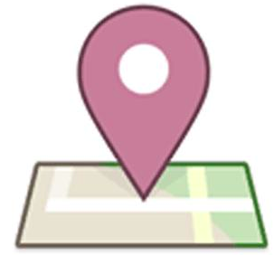

I am a
research fellow working
with
Prof. Paulo Esteves-Verissimo
at
CritiX
,
SnT
,
University of Luxembourg
. I am also an honorary research
fellow working
with
Prof. Mark Ryan in
the School
of Computer
Science, University
of Birmingham, UK, where I
received my PhD in computer
science.
I am interested in cyber security and
cryptography. In particular, the focus
of my research has been on design and
analysis of cryptographic protocols,
cryptographic key management, secure
authentication, post compromise
security, and public-ledger-based
applications.
Currently, I’m working on the public-ledger-based applications (e.g. crypto-currency and blockchain technology), IoT security (e.g. key management, device authentication, and secure communication), and post compromise security (e.g. detecting the compromise of secret keys and devices).
I am also available for
consultancy services,
please contact
me for more detail.

"If what you are doing is not important, and if you don't think it is going to lead to something important, why are you working on it?" --- Dr. Richard W. Hamming.
I'm into all kinds of Martial arts, including Kung-Fu, Jeet Kune Do, Sanshou (free combat), Chin Na (grappling), Chinese wrestling, Muay Thai, MMA.
 Research
Research
 Martial Arts
Martial Arts
 BUSINESS
BUSINESS
CIRT/ConfiMail
Certificate Issuance and Revocation Transparency (CIRT) is a new public key infrastructure, it enables efficient certificate issuance and revocation management, and can detect misbehaviours from certificate authorities which is required to be trusted in the current PKI. It can be applied to all systems where public key cryptography is used.
One interesting application of CIRT is an easy-to-use and end-to-end encrypted email system, called "ConfiMail". Public-key cryptography was invented to allow users to send encrypted mail; nevertheless, 35 years later, in practice it is rather hard for users to encrypt their mail in a systematic way. S/MIME and PGP exist but have failed to take off, for reasons that have been published in the paper "Why Johnny can’t encrypt" and become well-understood. Numerous efforts to improve this situation have been made, but none of them simultaneously satisfy the requirements of usability (users should not be required to understand anything about keys, or to take any special actions) and security (encryption should be end-to-end, and there should be no trusted parties). ConfiMail solves the two core problems – it allows users to send encrypted mail without having to understand anything about keys or certificates, and without having to rely on any trusted parties.
Key Usage Detection (KUD)
The key usage detection (KUD) system enables key owners to monitor the usage of their cryptographic decryption keys or signing keys, thus it can detect the unauthorised usage of secret keys. This is the first known system that makes unauthorised usage of long-term secret keys for decryption to be detectable. It can be applied to all communication systems where encryption is required.
If a communication system (e.g. email system, online finance system, cloud services, and other sensitive data exchanging systems) was having security flaws (e.g. having malware installed or having security bugs like Heartbleed and ShellShock), or hacked by some attackers, it is possible that the secret key of the system is exposed to the attacker. In this case, the security of the system is broken until the secret key has expired or revoked. However, according to the current state of the art, there is no way for the key owner to know if the key is compromised. So, the secret key owner is not prompted to revoke the comprised secret key or take other actions. Hence, the security that the system guarantees is broken until the secret key has expired. However even when a key is expired, the new key may also become compromised. This product solves this problem by letting the key owner be able to detect the fact of a compromised secret key. In addition, in systems where a key escrew authority exists, this product can detect if the secret key is abused.
There are many ways to contact me, for example, you can shout my name loudly... or by using the following means.
 +352 46 66 44 - 5984
+352 46 66 44 - 5984

 (Work account)
(Work account)
PGP Key
 (Personal account)
(Personal account)
PGP Key
 Maison du Nombre (Building),
E02 0245-040
(room),
University of Luxembourg,
6, Avenue de la
Fonte, L-4364,
Esch-sur-Alzette,
Luxembourg.